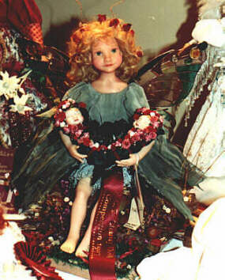

"Nikki" "Nikki....Caterpillar Watch" was my first venture into combining my two favourite artistic endeavors; stained glass and doll art. Inspired by the wonderful photography of New Zealand's Anne Geddes, Nikki is a butterfly child holding two porcelain "BabyFace" caterpillars. Her wings are made of antique mouth-blown glass, put together using the copper foil technique. I spent many years doing stained glass and was elated that I could successfully achieve this lovely combination. Nikki is made from Cernit with an elaborate balancing system, necessary to prevent her from toppling over from the weight of her glass wings. Needless to say, she was a bit of an engineering challenge!
Nikki and her caterpillar babies are now part of a private collection in Australia.
|